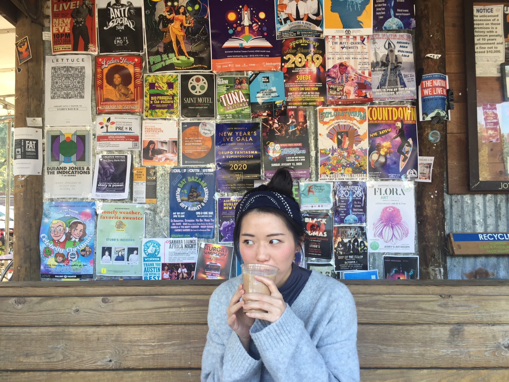

Ph.D., CCC-A
鄭帆吟
Assistant Professor | Principal Investigator, BEAN LabAuditory Neuroscience · Speech Processing · Clinical Hearing Science

I am an Assistant Professor in the Department of Communication Sciences and Disorders at Montclair State University, where I direct the Brain & Ear Auditory Neuroscience (BEAN) Lab. I earned my Ph.D. in Speech, Language, and Hearing Sciences from The University of Texas at Austin.
My research investigates how the auditory system represents speech and how sensory and cognitive processes interact to support communication in real-world listening environments. Using behavioral and electrophysiological approaches, my work integrates auditory neuroscience and clinical audiology to develop objective neural measures of speech perception and clinically relevant listening challenges.
Research in the BEAN Lab focuses on three areas: neural mechanisms of speech encoding, speech processing in complex listening environments, and objective neural biomarkers for clinical audiology.
Department of Communication Sciences and Disorders (CSND)
Montclair State UniversityBrain & Ear Auditory Neuroscience Lab (BEAN Lab)
Montclair State UniversityTexas Auditory Neuroscience Lab
Mentor: Spencer B. Smith, Au.D., Ph.D.
Dissertation: Effects of Preceding Vowels on Physiological Responses to Successive Consonants
The University of Texas at AustinThesis: Cross-linguistic Semantic Priming Effects in English Language Learners
University of Colorado BoulderAryal, S., Cheng, F.-Y., Mishra, S. K., & Smith, S. B. (2026). Brainstem encoding of speech in the extended high frequencies and its behavioral correlates. Journal of Neurophysiology, 135(1), 190–201.
Cheng, F.-Y., Medina, S., Obinna, O., & Smith, S. B. (2025). Dominant mid-to-high-frequency harmonics predict neural encoding and perception of concurrent vowels with large f0 differences. The Journal of the Acoustical Society of America, 158(2), 1296–1307.
Cheng, F.-Y., Campbell, J., & Liu, C. (2024). Auditory sensory gating: Effects of noise. Biology, 13(6), 443.
Xu, C., Cheng, F.-Y., Medina, S., Eng, E., Gifford, R. H., & Smith, S. B. (2023). Objective discrimination of bimodal speech using frequency following responses. Hearing Research, 108853.
Cheng, F.-Y., & Smith, S. B. (2022). Objective detection of the speech frequency following response (sFFR): A comparison of two methods. Audiology Research, 12(1), 89–94.
Cheng, F.-Y., Xu, C., Gold, L., & Smith, S. B. (2021). Rapid enhancement of subcortical neural responses to sine-wave speech. Frontiers in Neuroscience, 15, 747303.
Cheng, F.-Y., & Champlin, C. A. (2021). Auditory brainstem responses to successive sounds: Effects of gap duration and depth. Audiology Research, 11(1), 38–46.
Narasimhan, B., Cheng, F.-Y., Davidson, P., Kan, P. F., & Wagner, M. (2017). The influence of visual, auditory, and linguistic cues on children's novel verb generalization. In G. Sengupta, S. Sircar, G. Raman, & R. Balusu (Eds.), Perspectives on the architecture and acquisition of syntax (pp. 217–233). Springer.
Aryal, S., Cheng, F.-Y., Mishra, S. K., & Smith, S. B. (2026, April). Extended high-frequency hearing loss disrupts neural encoding of speech at the brainstem. American Academy of Audiology (AAA) Convention, San Antonio, TX. Student Research Forum.
Smith, S. B., Aryal, S., & Cheng, F.-Y. (2025, December). Extended high frequency hearing predicts neural encoding and perception of speech in the standard frequency range. Sixth Joint Meeting of the Acoustical Society of America and the Acoustical Society of Japan (ASA/ASJ), Honolulu, HI.
Aryal, S., Cheng, F.-Y., Mishra, S. K., & Smith, S. B. (2025, June). Beyond the audiogram: Brainstem encoding and behavioral correlates of EHF speech. International Evoked Response Audiometry Study Group (IERASG), Boulder, CO.
Cheng, F.-Y., Sunderhaus, L., Shi, L., Obinna, O. S., Medina, S., Neukam, J. D., et al. (2025, February). Developmental impacts on neural and behavioral measures of binaural acuity in normal hearing and electroacoustic stimulation (EAS) listeners. Association for Research in Otolaryngology (ARO) Midwinter Meeting, Orlando, FL.
Cheng, F.-Y., & Xu, C. (2024). Enhancing clinical decision-making with machine learning: Insights from auditory electrophysiology. Annual Conference of the American Speech-Language-Hearing Association (ASHA), Seattle, WA.
Cheng, F.-Y., Smith, S. B., & Champlin, C. A. (2023). Effects of preceding vowels on physiological responses to successive consonants. Association for Research in Otolaryngology (ARO) Midwinter Meeting, Orlando, FL.
Cheng, F.-Y., Xu, C., Gold, L., & Smith, S. B. (2022). Auditory perceptual shifts from non-speech to speech enhance subcortical auditory processing. Association for Research in Otolaryngology (ARO) Midwinter Meeting, Virtual Meeting.
Cheng, F.-Y., Xu, C., Ornelas, M.-E., Goodall, H., Gold, L., & Smith, S. B. (2021). Attention effects on cortical neural processing in spatial listening. The Journal of the Acoustical Society of America, 150(4), A143.
Assistant Instructor, The University of Texas at Austin
Teaching Assistant, The University of Texas at Austin
Teaching Assistant, The University of Texas at Austin
State Board of Audiology and Speech-Language Pathology
American Speech-Language-Hearing Association
Texas Department of Licensing and Regulation
Dr. Cheng is a licensed audiologist with clinical training in diagnostic audiology, electrophysiologic assessment, hearing technology, cochlear implant-related services, and aural rehabilitation. Her clinical background informs the BEAN Lab's focus on clinically relevant measures of speech perception and listening challenges.